wsl -l # Run in Windows Powershell
wsl --unregister Ubuntu # Unregister if exists
wsl -l
wsl --install # Install wsl
1. Introduction
This post shows how to set up Linux-based Python Notebooks on a Windows PC for Data Science and Deep Learning Projects.
One of the drawbacks of Python-based Projects are compatability issues with packages which were developed with Linux.
Linux is often preferred for Python development due to its:
- powerful terminal for scripting and automation
- has a open-source philosophy fostering community-driven ecosystem
- containerization (e.g. Docker) and orchestration (e.g. Kubernetes)
- Has a robust package management (APT and YUM)
- Resource efficiency suitable for running Python applications (in resource-constrained environments)
- compatibility with production environments & real-world deployments
2. Linux
2.1 Install Linux
I had previously blindly installed Linux, officially named “Windows Subsystem for Linux (wsl)” and then never used it again.
I’ll firstly uninstall the existing distribution, then install a fresh copy.
- Check any existing installation:
wsl -l - If exists, uninstall:
wsl --unregister Ubuntu - Run 1. again
wsl - l - Install Linux
wsl --install - Create username
- Create passwword
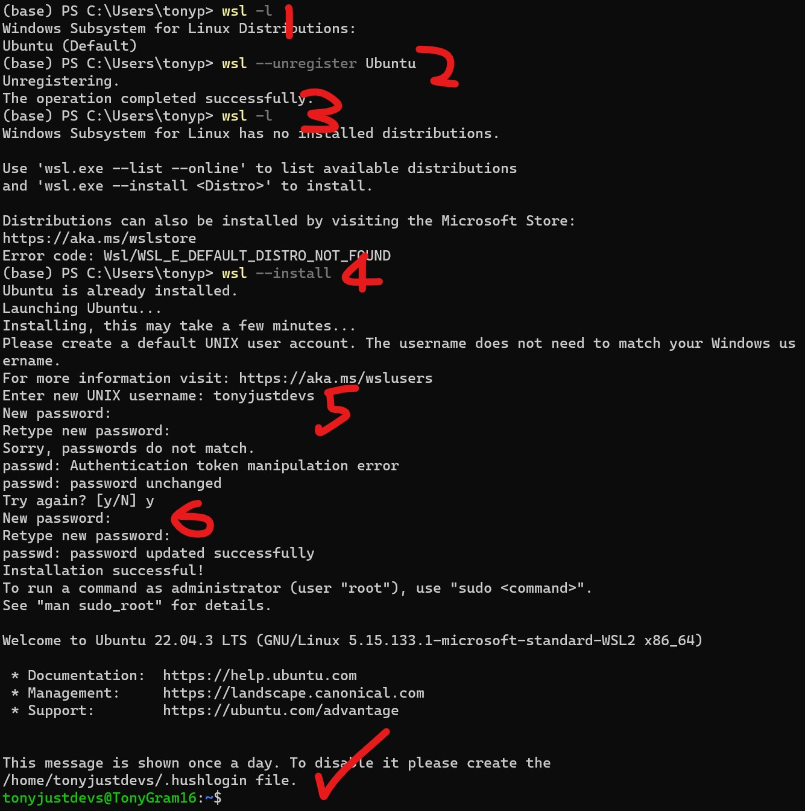
2.2 Linux Basics
- Username:
whoami - Switch user (from admin):
sudo -u user_name -i - Switch user (user login):
su - username - Working directory:
pwd - Move to folder in current directory :
cd / - Home:
echo $HOME - Move to root :
cd / - Move up 1-level:
cd .. - List all in folder:
ls - Move up a level:
cd .. - Privledges:
sudo id - Create user:
sudo adduser new_user_name - List usernames:
cut -d: -f1 /etc/passwd - Grant “bob” permission to install a pkg::
sudo -u bob apt install pkg-name - Download url:
wget url - Remove:
rm folder - Remove forcefully :
rm -rf folder - Move folder:
mv folder_from folder_to - List human readable:
ls -lh - List all includes hidden:
la -a - List with permissions:
ls -l - Add permissions to file:
chmod u+x theshell.sh - A Shell script:
.sh - Read .sh script:
less scriptname.sh - Run .sh with Bash:
bash scriptname.sh - Run .sh with Bash accept all licenses:
bash scriptname.sh -b - Run .sh with pattern with Bash:
bash Miniforge3-*.sh -b - Automatically runs when Terminal starts:
.bashrc - Edit a script:
vim .bashrc - Bash history:
cat .bash_history - Search Bash history:
ctrl r+word - Run last command starting with:
!ju(runs jupyter if you’ve previously run it) - Rerun last command:
!! - Move to start of line:
ctrl+a - Move to end of line:
ctrl+e - Move by word:
alt+l, alt+r - Create alias:
alias jl = "jupyter lab --no-browser" - [
vim] - enter normal mode:Esckey - [
vim] - move to front:gg - [
vim] - move to end:G - [
vim] - highlight to end:V(visual mode)G(move to end) - [
vim] - move along word:h,j,k,l,w,b,e,0 - [
vim] - move along line:0,$,^ - [
vim] - move along screen:H,M,L - [
vim] - move along pages:ctrl + f,b,d,u - [
vim] - move line:zt,zz,zb - [
vim] - search:/pattern,?pattern,n,N - [
vim] - move line nbr::[line number] - [
vim] - make changes / insert mode:ithenesc - [
vim] - save changes::w - [
vim] - quit::q - [
vim] - quit and discard changes::q! - [
vim] - help: self-explanatory - [
tmux] - split-right:ctrl-b % - [
tmux] - split-down:ctrl-b " - [
tmux] - move:ctrl-b arrows - [
tmux] - detach:ctrl-b d - [
tmux] - attach:tmux a
3. Python
There are several options for building linux python projects:
Conda: For extensive package management and control or flexibility beyond deep learning/data science.
Miniforge: For lightweight and focused option for deep learning/data science projects.
Anaconda: For a convenient, pre-configured environment for data science and deep learning, but be mindful of its larger size.
For my purposes, I’d like to be focused on deep learning / data science projects hence I’ll install Miniforge.
3.1 Miniforge
Miniforge offers a powerful and user-friendly environment management platform for data science and deep learning.
Several reasons to use Miniforge:
- Virtual environments: Isolate projects and manage dependencies.
- Pre-built environments: Quickly set up optimized environments (TensorFlow, PyTorch, etc.).
- Cross-platform compatibility: Works on Windows, macOS, and Linux.
- Large community and support: Extensive resources and active development.
- Performance and efficiency: Caching and optimized packages.
- Free and open-source: No licensing costs or limitations.
3.2 Get Miniforge download link
- Get amd64 (Windows) download link from Miniforge Github
- Download link used: “https://github.com/conda-forge/miniforge/releases/latest/download/Miniforge3-Linux-x86_64.sh”
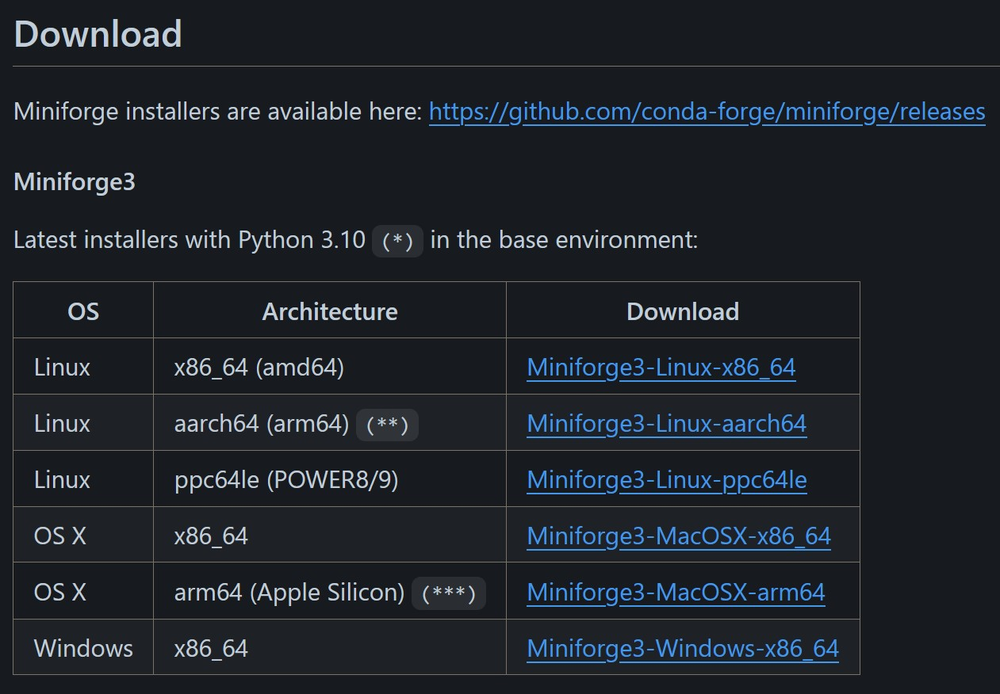
3.3 Install Miniforge in Ubuntu
- Open Windows Terminal (this should automatically open Ubuntu now)
- Go to Home directory (
echo $HOME) :- Logging in
su - usernameor - Moving up
cd ..and downcd folder_name_in_curr_dir
- Logging in
- Go to your home/directory:
echo $HOME - Create a new working directory:
mkdir downloads - Move to downloads folder:
cd downloads- This folder should be empty, and your Ubuntu should be
not foundwith these keywords:Python,Jupyter,ipythonetc. - If they are found:
- Uninstall:
pip install ipython, - Delete:
rm -rf ipythonorrm usr/bin/jypor - Move:
mv folder_from folder_to
- Uninstall:
- This folder should be empty, and your Ubuntu should be
- Download url:
wget the_copied_url_link_from_github_aboveor
wget https://github.com/conda-forge/miniforge/releases/latest/download/Miniforge3-Linux-x86_64.sh
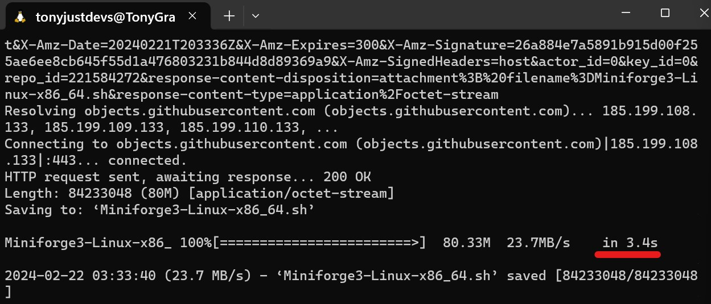
3.4 Run downloaded Miniforge shell script
- [Manual Method]:
- Accept All Permissions (Creates environment variables so that keywords like ‘conda’ works and automatically runs Conda when Terminal is first logged on and activates a
baseenvironment. This automation is done by editting the.bashrcfile.) or
- Accept All Permissions (Creates environment variables so that keywords like ‘conda’ works and automatically runs Conda when Terminal is first logged on and activates a
- [Script Method]:
bash Miniforge3-*.sh -band then~/miniforge3/bin/conda init bash. This runs python file conda.py within miniforge which runs another file that creates the Conda Paths and Adding Paths to Ubuntu Environment variables (same as accepting all permissions in manual method)
There should be two folders: downloads and miniforge3 in the Home directory (Ignore nbs, this is created later)
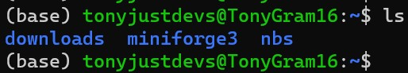
4. Conda
Python should be now installed via miniforge3:
- which python should be running from miniforge3 folder within your Home directory.
- If not, something went wrong!
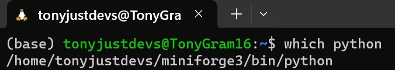
4.1 Conda basics
- Show conda arguments:
conda
- General system info:
conda info
- Show environments:
conda env
- Create new environment:
conda create -n deep_learning
- Activate environment:
conda activate deep_learning
- Show installed packages:
conda list
- Install a package:
conda install package_name
4.2 Install Pytorch
Go to Official Website and choose accordingly and install
I used conda install pytorch torchvision torchaudio cpuonly -c pytorch
Notes: Following the website ensures all binary dependencies are install, simply typing pip install pytorch wont work as normally due to requiring to also needing to installing CUDA SDK (if you have a NVidia GPU)
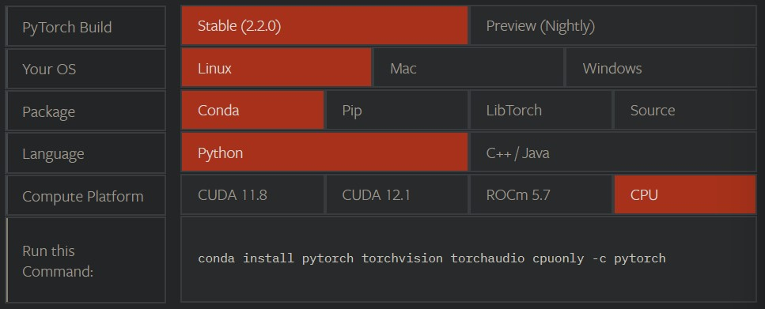
4.3 Checking Pytorch is working
- Have Ipython installed and
ipython import torchtorch.+*tab*button This should display a list of available pytorch methods.ctrl_dto exit
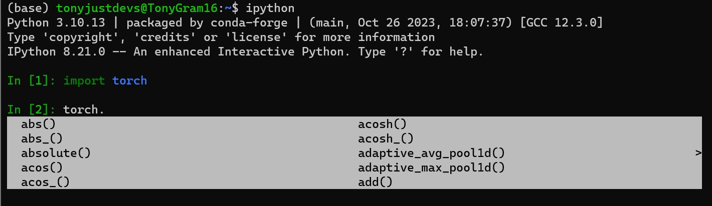
5. Jupyter Notebooks
Install Jupyter Lab to have suite of notebooks and other useful tools for testing and developing data science and deep learning projects.
5.1 Install Jupyter Lab
Go to Official Website and select appropriate install option I used conda install -c conda-forge jupyterlab.
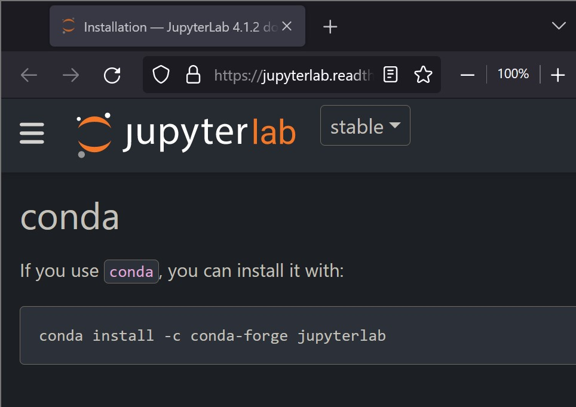
5.2 Run Jupyter Lab
- Run Jupyter:
jupyter labor - Run Jupyter:
jupyter lab --no-browser(avoids attempting to open a browser in linux because it cant)
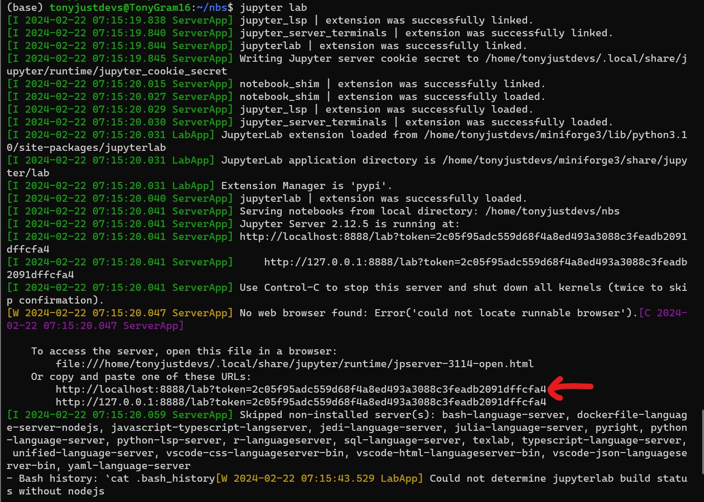
5.3 Automate Alias
Save alias jl="jupyter lab --no-browser" into .bashrc to jl works everytime:
- Open bashrc:
vim ~/.bashrc - Go to End:
G - Paste:
alias jl="jupyter lab --no-browser - Save:
:qw:(quitqand savew)
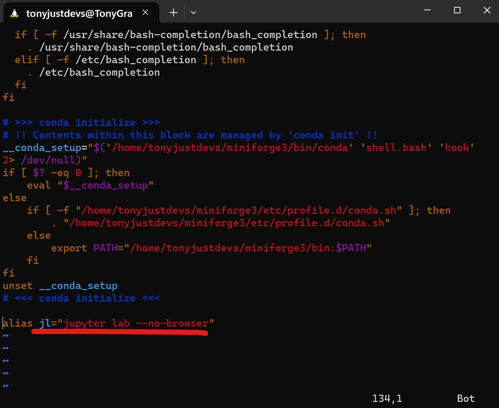
5.4 Open in Browser
- Open in Browser by [Control+Click] the link
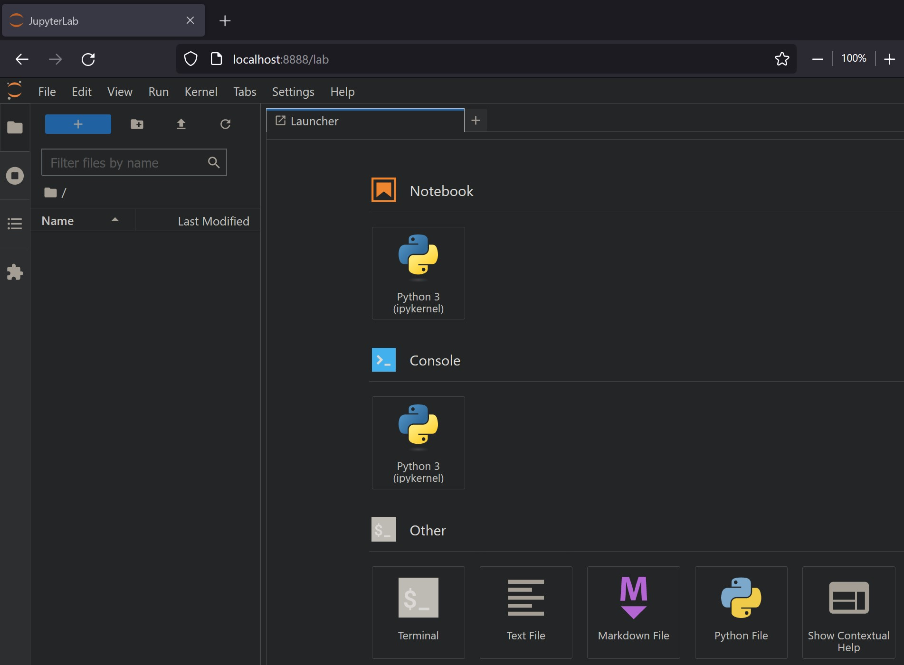
5.5 Save First Notebook in Linux
Try out PyTorch in the Notebook and save it.
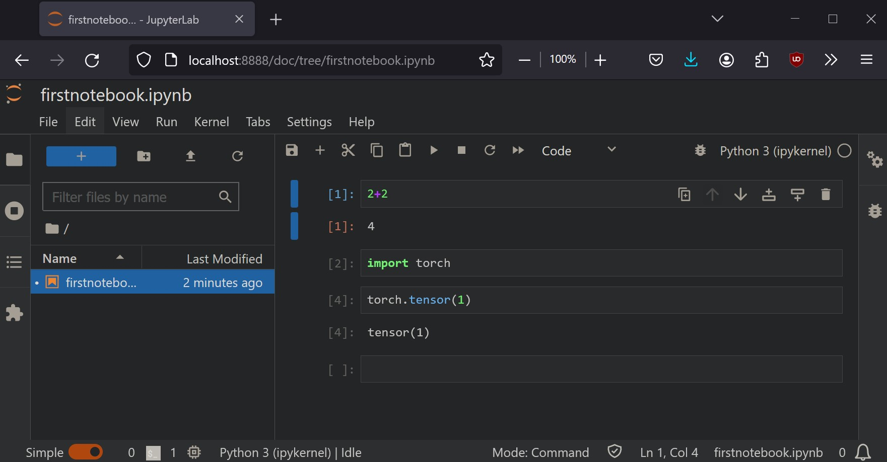